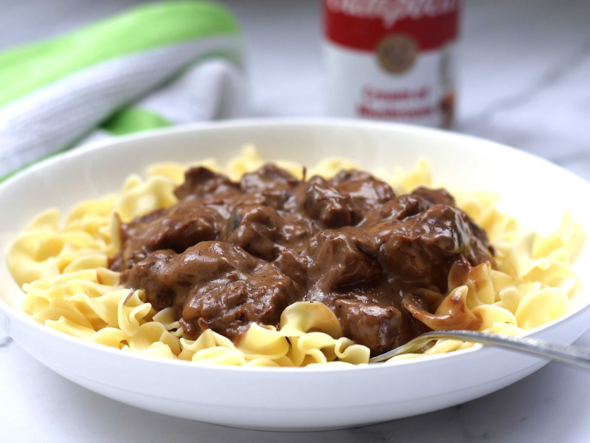

Beef Tips with Egg Noodles

Description
Cubed sirloin tips baked in cream of mushroom soup, red wine,
milk, mixed with beef and beef onion soup mix.
Served over egg noodles. Great with dinner rolls
or garlic toast. Let's get cooking!
Ingredients
- 2 lbs sirloin tips, cubed
- 1/2 yellow onion, chopped
- 2 cans condensed cream of mushroom soup
- 1 cup milk
- 1/2 cup red wine
- 1 package beef with onion soup mix
- 2 packages egg noodles
Steps
- Heat a large skillet over medium-high heat.
Saute beef sirloin tips with onion in the hot skillet
until beef is browned, about 5 minutes.
-
Stir cream of mushroom soup, milk, red wine, and
beef with onion soup mix together in a large bowl.
Pour into the skillet and stir to coat beef in
the soup mixture; bring to a simmer, reduce heat to low,
place a cover on the skillet, and cook until the
beef tips are tender, about 2 hours.
-
Reduce heat to lowest setting and continue cooking
until the beef pulls apart easily with a fork,
at least 4 more hours.
-
Bring a large pot of slightly salted water to a boil.
Cook egg noodles in the boiling water, stirring
occasioanlly unitl cooked through but firm
to the bite, about 5 minutes. Drain.
- Ladle beef tips mixture over egg noodles and enjoy!
Home